目录
前言
快速开发插件 快速建立controller，dao,service,.xml文件
参考网址 Mybatis-plus
一、Mybatis-X是什么？
MybatisX 是一款基于 IDEA 的快速开发插件，为效率而生。
安装方法：打开 IDEA，进入 File -> Settings -> Plugins -> Browse Repositories，输入 mybatisx 搜索并安装。
1、功能描述
XML跳转 
生成代码 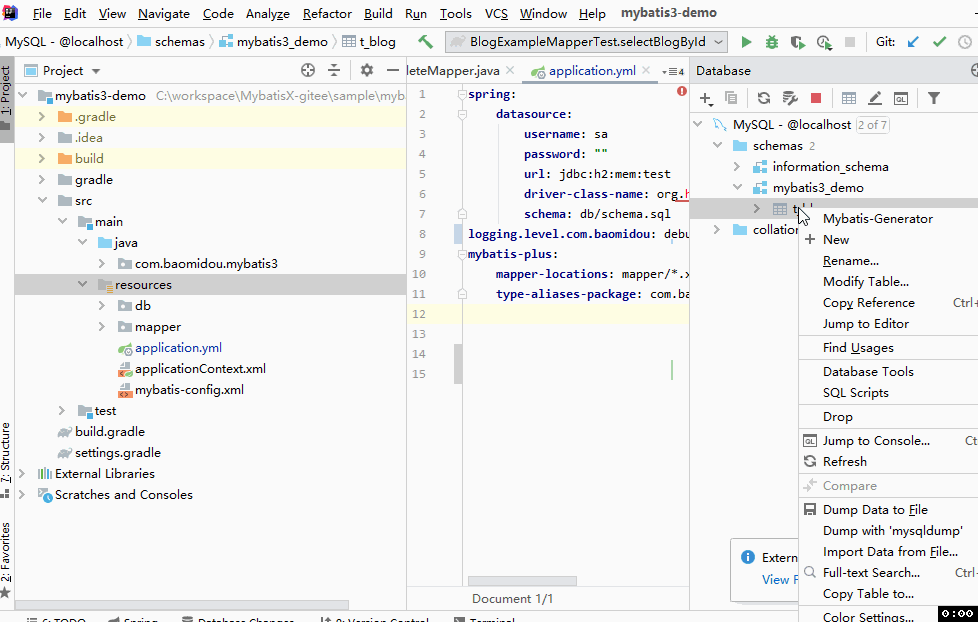
重置模板 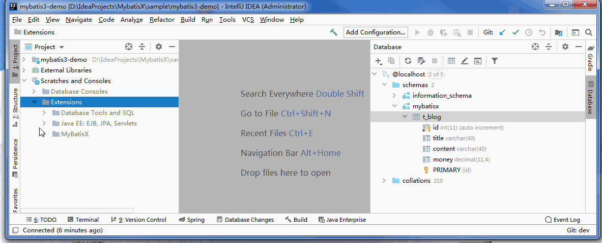
JPA提示
生成新增
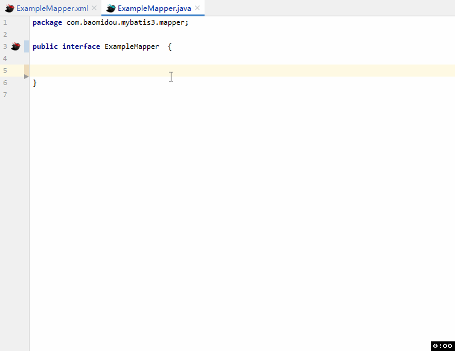
生成查询
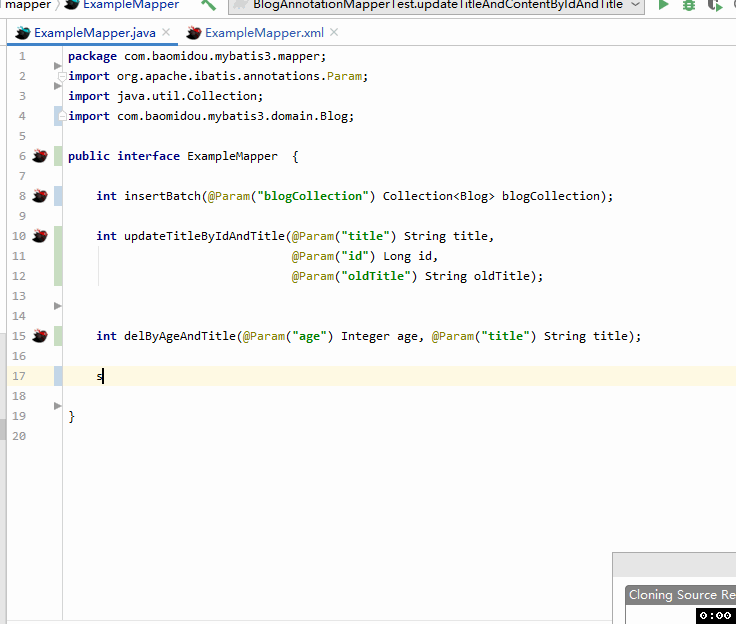
生成修改
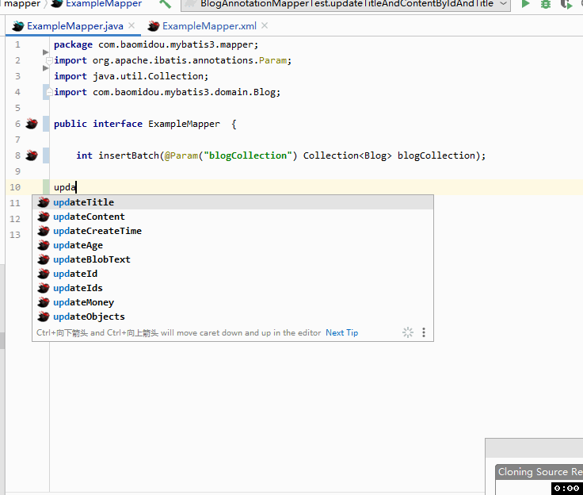
生成删除
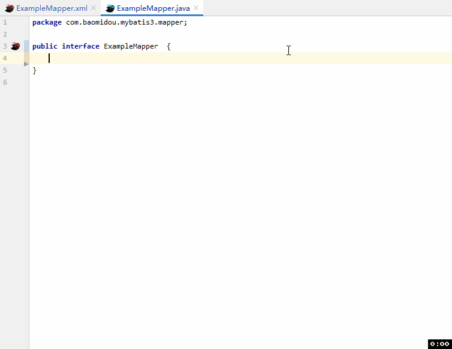
2.创建步骤
2.1连接数据库
示例连接MySQL
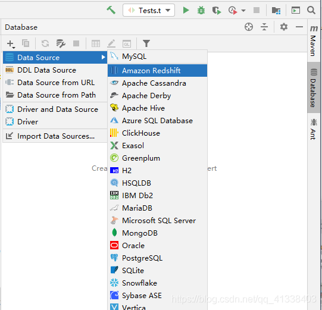
点击Mysql ，输入账户密码 Database 也可不填(最好填上数据库)，在连接时可能会报错连接时区错误，时区问题在URL后面添加?serverTimezone=Asia/Shanghai即可连接成功
?serverTimezone=Asia/Shanghai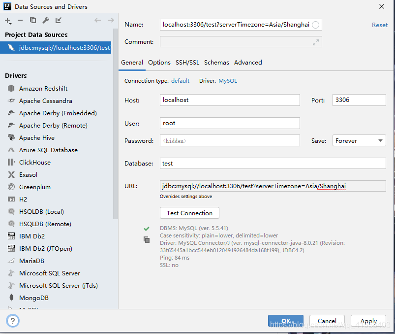
点击Apply 即可在页面看到下图
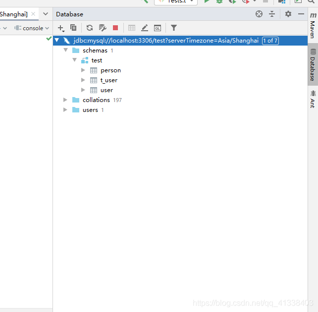
参考文档 https://blog.csdn.net/qq_44938782/article/details/104336073
2.2快速生成
选择表右键点击MybatisX-Generator
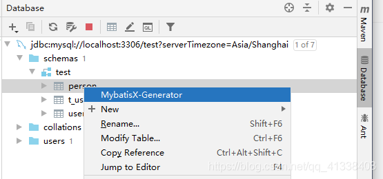
选择配置
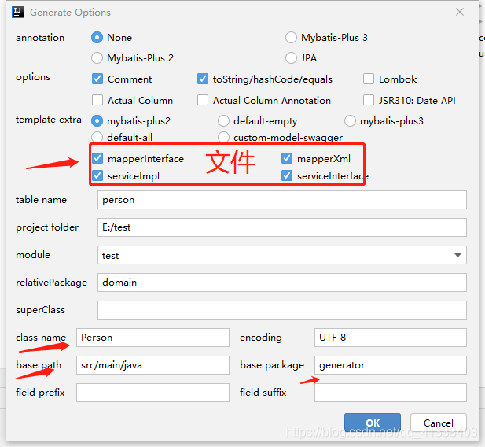
点击ok即可看到文件生成成功
总结
本文仅仅简单介绍了MybatisX的使用，而MybatisX提供了大量能使我们快速便捷地处理数据的函数和方法。


 128
128


 到【灌水乐园】发言
到【灌水乐园】发言